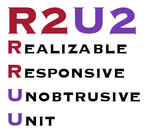
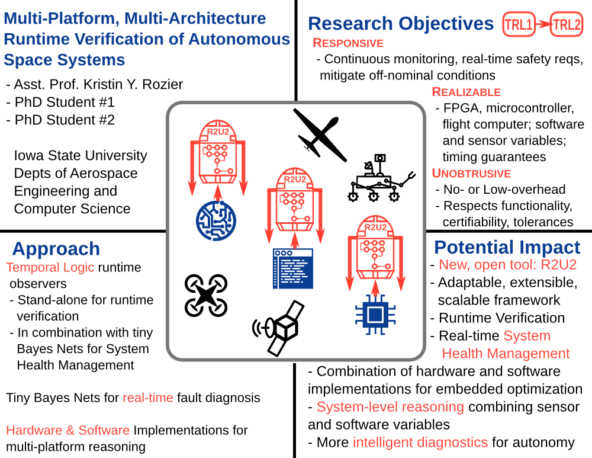

|
|
R2U2: Intelligent Hardware-Enabled Sensor and Software Safety and Health Management for Autonomous UAS
Our run-time monitoring of LTL safety specifications with Bayesian reasoning advances flight-certifiable health management on-board Unmanned Aerial Systems!

PIs
- PI: Kristin Y. Rozier, Iowa State University, Ames, IA 50011, USA
- PI: Johann Schumann, SGT, Inc., NASA Ames Research Center, Moffett Field, CA 94035, USA
Collaborators
- Bijan Choobineh, undergraduate research assistant, Iowa State University, Ames, IA, USA
- Johannes Geist, M.S. research intern, University of Applied Sciences Technikum Wien, Vienna, Austria
- Corey Ippolito, civil servant, NASA Ames Research Center, Moffett Field, CA, USA
- Stefan Jaksic, Ph.D. student, University of Applied Sciences Technikum Wien, Vienna, Austria
- Phillip Jones, Associate Professor, Iowa State University, Ames, IA, USA
- Chetan S. Kulkarni, Research Engineer, SGT, Inc., NASA Ames Research Center, Moffett Field, CA, USA
- Eddy Mazmanian, civil servant, NASA Ames Research Center, Moffett Field, CA, USA
- Patrick Moosbrugger, Ph.D. student, University of Applied Sciences Technikum Wien, Vienna, Austria
- Quoc-Sang Phan, Ph.D. research intern, Queen Mary University of London, UK
- Thomas Reinbacher, Ph.D. research intern, Vienna University of Technology, Vienna, Austria
- Indranil Roychoudhury, Computer Scientist, SGT, Inc., NASA Ames Research Center, Moffett Field, CA, USA
- Iyal Suresh, sophomore undergraduate intern, University of California, Los Angeles, USA
- Joseph Zambreno, Assistant Professor, Iowa State University, Ames, IA, USA
- Pei Zhang, PhD. student, Iowa State University, Ames, IA, USA
The project team has also worked closely with members of the airborne science group at NASA Ames Research Center in Code SG. We would like to give special thanks to Matt Fladeland (ARC/SG), Ric Kolyer (ARC/SG), Bruce Storms (ARC/AOX), and the rest of the Dragon Eye team who we collaborated with for modification and flight testing of the NASA Dragon Eye aircraft systems.
Publications
- Patrick Moosbrugger, Kristin Y. Rozier, and Johann Schumann. ``R2U2: Monitoring and Diagnosis of Security Threats for Unmanned Aerial Systems.'' In Formal Methods in System Design Journal (FMSD), pages 1--31, Springer-Verlag, April, 2017. DOI:10.1007/s10703-017-0275-x. PDF BibTeX
- Johann Schumann, Patrick Moosbrugger, and Kristin Y. Rozier. "Runtime Analysis with R2U2: A Tool Exhibition Report." In Proceedings of the 16th International Conference on Runtime Verification (RV16), Springer-Verlag, Madrid, Spain, September, 2016. PDF BibTeX Website Demo
-
Johann Schumann, Patrick Moosbrugger, and Kristin Y. Rozier. ``R2U2: Monitoring and Diagnosis of Security Threats for Unmanned Aerial Systems.'' In Proceedings of the 15th International Conference on Runtime Verification (RV15), Springer-Verlag, Vienna, Austria, September 22--25, 2015. PDF BibTeX
-
Johann Schumann, Kristin Y. Rozier, Thomas Reinbacher, Ole J. Mengshoel, Timmy Mbaya, and Corey Ippolito. ``Towards Real-time, On-board, Hardware-supported Sensor and Software Health Management for Unmanned Aerial Systems.'' In International Journal of Prognostics and Health Management (IJPHM), volume 6, number 1, pages 1--27, PHM Society, June, 2015. PDF BibTeX
-
Johannes Geist, Kristin Yvonne Rozier, and Johann Schumann. "Runtime Observer Pairs and Bayesian Network Reasoners On-board FPGAs: Flight-Certifiable System Health Management for Embedded Systems." In 14th International Conference on Runtime Verification (RV14), Springer-Verlag, Toronto, Canada, September 22-25, 2014. PDF (Proceedings version: PDF) BibTeX Experiments/Downloads
-
Thomas Reinbacher, Kristin Y. Rozier, and Johann Schumann. "Temporal-Logic Based Runtime Observer Pairs for System Health Management of Real-Time Systems." In 20th International Conference on Tools and Algorithms for the Construction and Analysis of Systems (TACAS), volume 8413 of
Lecture Notes in Computer Science (LNCS), pages 357--372, Springer-Verlag, Grenoble, France, 5-13
April 2014.
PDF
(Proceedings version: PDF)
BibTeX
Tools and Simulation Traces
-
Johann Schumann, Kristin Y. Rozier, Thomas Reinbacher, Ole J. Mengshoel, Timmy Mbaya, and Corey Ippolito. "Towards Real-time, On-board, Hardware-supported Sensor and Software Health Management for Unmanned Aerial Systems." In 2013 Annual Conference of the Prognostics and Health Management Society (PHM2013), pages 381--401. October, 2013. PDF BibTeX
Seminars
-
NASA Director's Colloquium: K.Y. Rozier: "No More Helicopter Parenting: Intelligent Autonomous Unmanned Aerial Systems." NASA Ames' premier seminar series, the Director's Colloquium, special edition in honor of NASA Ames' 75th Anniversary celebration, by special invitation of the Office of the Chief Scientist. NASA Ames Research Center, Moffett Field, California, June 10, 2014. [Now available on the NASA Ames YouTube Channel under "Dr. Kristin Yvonne Rozier - No More Helicopter Parenting: Intelligent, Autonomous UAS" ]
-
FORTISS Invited Talk: J. Schumann: ``Towards on-board, hardware-supported Sensor and Software Health Management for UAS.'' FORTISS, Technische Universitat Munchen, Germany, June 2014.
-
NARI/ARMD Seedling Technical Seminar: K.Y. Rozier, J. Schumann, C. Ippolito: ``Intelligent Hardware-Enabled Sensor and Software Safety and Health Management for Autonomous UAS'' 2015 NARI LEARN/Seedling Technical Seminar (Final Report), January 13, 2015. [Now available on the NARI Seminar Site ]
-
Rice University Seminar: K.Y. Rozier: ``Runtime Verification for System Health Management: the R2U2 Framework.'' Computer-Aided Verification and Reasoning (CAVR) Seminar, Rice University, October 19, 2016.
-
FSW Talk: K.Y. Rozier: ``R2U2 in Space: System and Software Health Management for Small Satellites.'' Spacecraft Flight Software Workshop (FSW), California Institute of Technology, Pasadena, CA, December 13--15, 2016. [Video available as part of the FSW YouTube]
-
NASA/JPL Mobility and Robotics Seminar: K.Y. Rozier: ``R2U2: Formal System Health Management for Autonomous Systems.'' NASA JPL Mobility and Robotics Section Seminar@198-102, Pasadena, CA, December 16, 2016.
-
NASA STMD ECF: K.Y. Rozier: ``R2U2: Formal System Health Management for Autonomous Systems.'' Verification and Validation of Autonomous Systems Seminar, Johnson Space Center, Houston, TX, May 3, 2017.
Currently supported by a grant from: NASA Early Career Faculty (ECF) Award

|